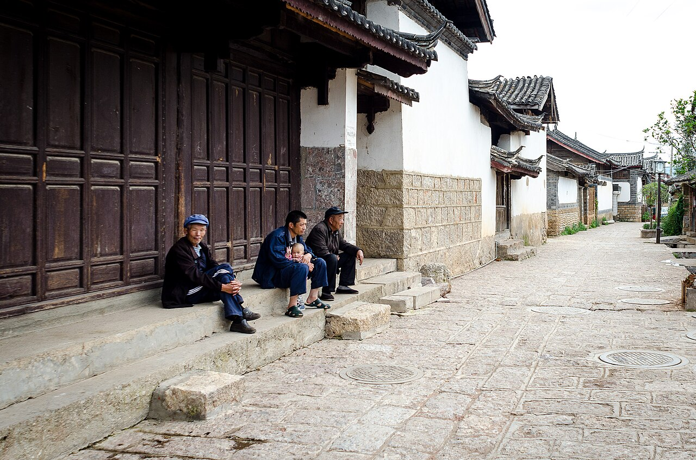
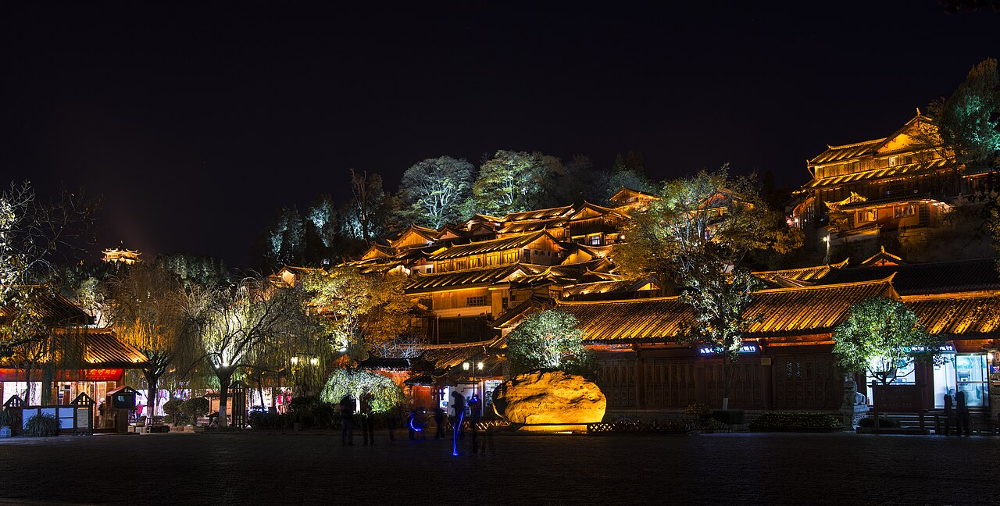

预算允许时，玉龙雪山值得单独成线
黑龙潭负责低成本看雪山倒影，白沙负责古镇与雪山同框，景区主日负责甘海子、蓝月谷和可选冰川公园。三种画面不重复，D5还能给天气留补偿。
佛山/广州 → 昆明 → 丽江 → 黑龙潭 → 白沙古镇 → 玉龙雪山甘海子/蓝月谷/冰川公园 → 昆明 → 广州/佛山。
这不是专业登山线。稳妥底盘是“雪山观景＋蓝月谷”，天气、索道票和身体状态都合格时，再上冰川公园看高海拔雪山。
黑龙潭负责低成本看雪山倒影，白沙负责古镇与雪山同框，景区主日负责甘海子、蓝月谷和可选冰川公园。三种画面不重复，D5还能给天气留补偿。
7月能去，但雨季云量更不稳定。想提高看见雪山和金色晨光的概率，优先10月下旬至11月，或次年1—3月；任何月份都不能保证。
跨城线路以12306实际车次为准；丽江市内和雪山当天路线用高德实时导航，页面提供可复制关键词。
路线：佛山 → 广州南 → 昆明
今晚：实际始发站1公里圈｜1晚
关键：不硬接丽江
明早：车前60—90分钟出门
路线：昆明 → 丽江站
今晚：丽江北门/黑龙潭｜第1/4晚
关键：下午只休息
明早：日出前30分钟出门
路线：黑龙潭 → 白沙古镇
今晚：丽江｜第2/4晚
关键：晨光优先，白沙慢逛
明早：按景区接驳时间
路线：甘海子 → 冰川可选 → 蓝月谷
今晚：丽江｜第3/4晚
关键：身体不适立刻下撤
明早：睡到自然醒
路线：束河/白沙/补雪山三选一
今晚：丽江｜第4/4晚
关键：不重复堆古镇
明早：退房去丽江站
路线：丽江 → 昆明
今晚：返程车站圈｜1晚
关键：不接广州长途车
明早：车前60—90分钟出门
路线：昆明 → 广州南 → 佛山
今晚：正常不住
关键：只保返程
晚点：广州南周边备选





适合：天气晴、索道票已锁、身体状态正常，愿意接受高海拔的人。
优点：雪山距离感最强，画面层次完整。
缺点：高反、风雪、索道停运和排队风险更高。
触发：胸闷头痛、天气差、索道停运/无票、同行人明显疲劳。
优点：仍有雪山和水色，走路和预算更可控。
缺点：没有高处冰川视角，但不算白跑。
今日一句话：上午从佛山去广州南，坐白天车到昆明；到站只吃饭、入住、核对D2车站。
必做：确认次日到底从“昆明站”还是“昆明南站”出发。
可删：昆明夜游全部可删。
佛山 → 广州南。按城际/地铁方案预留换乘；长途车建议开车前45—60分钟到站。
广州南 → 昆明。优先选上午出发、傍晚前到的车；近期样例约6小时45分—8小时11分，实际以12306为准。
先核站名再去酒店。昆明站与昆明南站不是同一处；不为夜逛跨城折返。
确认D2。车次、站名、进站口、酒店退房和丽江酒店接待时间。
12306 广州南 昆明 / 昆明南
今日一句话：上午动车到丽江，下午只办理入住和休息，晚上在酒店附近吃清淡饭。
住宿选择：古城北门、黑龙潭南侧、香格里拉大道靠主路，避免拖箱深入石板巷。
可删：古城夜游。
退房去实际始发站，车前60—90分钟从酒店出发。
昆明 → 丽江站；近期样例有08:29、09:08等上午车，班次随日期变化。
丽江站 → 酒店。公交省钱、打车省体力；只导航酒店正门。
休息、补给、看天气；晚饭后最多轻逛60分钟。
丽江 古城北门 黑龙潭 酒店
今日一句话：按当天日出时间提前30分钟到黑龙潭；看完回城吃早餐，再去白沙慢走。
必看：古桥、水面倒影、雪山轮廓；白沙主街与安静支巷。
可删：云厚时不苦等日照金山。
酒店 → 黑龙潭。不要把固定钟点写死，前一晚查日出和云量。
黑龙潭核心观景：桥、潭水、雪山中轴；云厚30分钟仍不开就止损。
黑龙潭/酒店 → 白沙古镇。吃午饭、慢走，不追网红店。
回酒店午休；确认D4索道时间、接驳集合点和天气。
丽江 黑龙潭公园 南门 / 白沙古镇
今日一句话：索道预约时段决定先后；无论是否上冰川公园，都保住甘海子与蓝月谷。
必做：身份证、官方二维码、充电宝、防晒、保暖、水、轻食。
氧气：担心高反可在正规点购买小瓶备用，不舒服先休息和下撤。
酒店 → 约定集合点/游客中心。跟团或直通车只选正规订单，确认返程时间。
按索道时段排甘海子与冰川公园。索道后不跑、不催同伴；任何明显不适立即停。
简餐后蓝月谷。电瓶车是可选消费，体力好可分段走，体力差直接买。
按约定点返丽江；晚饭清淡，回酒店补水、充电。
玉龙雪山国家级风景名胜区 游客中心
今日一句话：D4顺利就选束河/酒店休整；D3白沙被删就补白沙；D4因天气失败且官方可改期，再补雪山。
原则：三选一，不把束河、白沙、古城全部塞满。
自然醒；先看天气和前四天缺口，再决定去向。
束河或白沙二选一；午饭后咖啡/茶馆休息。
回酒店整理；核对D6动车站、车次、行李。
丽江 束河古镇 北门
今日一句话：上午退房去丽江站，下午到昆明后只住返程车站附近。
可删：昆明城市景点全部可删。
酒店退房，打车到丽江站。
丽江 → 昆明；到站先确认D7是否同站。
酒店附近清淡晚饭，全部设备充满。
12306 丽江 昆明
今日一句话：只保交通，不用“返程前再去一个景点”。
行李：身份证、充电宝、药品和贵重物品随身。
酒店 → 昆明实际车站。
昆明 → 广州南；优先选能在正常公共交通时段抵达广州的班次。
广州南 → 佛山；跨城晚点时不冒险赶末班车。
12306 昆明 广州南
12306 广州南 昆明
12306 昆明 丽江
高德 黑龙潭公园 白沙古镇
丽江 玉龙雪山 直通车 官方
丽江 古城北门 黑龙潭 酒店
| 项目 | 当前参考 | 在哪里查/买 | 建议提前 | 额外消费 | 没票怎么办 |
|---|---|---|---|---|---|
| 广州南—昆明 | 近期样例二等座约517.5元/人单程 | 铁路12306 | 开放售票即查 | 到站市内交通 | 前后错开半天，不买不明代抢 |
| 昆明—丽江 | 近期样例约175—210元/人单程 | 铁路12306 | 与长途票同时查 | 丽江站到酒店 | 改同日相邻车次 |
| 玉龙雪山进山门票 | 100元/人 | 微信小程序“玉龙雪山服务” | 官方已支持购买7日内门票 | 环保车另计 | D5改期或走城北观景 |
| 环保运输车 | 20元/人，当前公告为必要景区交通 | 官方购票页面 | 与门票一起核 | 不含各索道 | 按官方当天规则 |
| 冰川公园索道 | 120元/人，当前暑期公告价 | “丽江旅游集团”或景区官方渠道 | 关注官方预售窗口，旺季尽早 | 高处氧气/保暖为个人消费 | 自动切B版：甘海子＋蓝月谷 |
| 蓝月谷电瓶车 | 当前公开信息常见全程40元/人，属可选 | 景区现场/官方页面 | 现场按体力决定 | 不是门票必含 | 分段步行或不坐 |
日期：D3；日出前30分钟到。
导航：黑龙潭公园南门，最终看当天开放入口。
走法：入口 → 古桥/水边主视角 → 雪山中轴机位 → 原路或近路出。
必看：潭水倒影、古建与雪山；可删：绕湖完整一圈。
时长：60—90分钟。厕所和补给先在入口解决。
天气：云厚30—45分钟仍不开山就止损，不为照片耗半天。
之后：回城吃早餐，再去白沙。
日期：D3或D5补位。
导航：白沙古镇停车场/主入口。
走法：主街 → 安静支巷 → 雪山视野开阔处 → 午饭 → 返回。
必看：纳西建筑、村落生活、雪山背景；可删：排队网红店。
时长：2.5—4小时。公厕、餐饮集中在主街。
避坑：不买离路线很远的“古镇套票”，壁画等单独项目按兴趣和官方规则。
日期：D4；以预约索道时段为轴。
准备：身份证、二维码、薄羽绒/冲锋衣、防晒、充电宝、水、小瓶氧气可备用。
走法：游客中心/甘海子 → 景区交通 → 索道站 → 索道上行 → 观景平台短停 → 下行。
必看：近距离雪山和高处山体；可删：为海拔牌继续长台阶。
时长：按索道时段和排队约2—3.5小时。
高反：头痛、胸闷、恶心、步态不稳即停止上行；休息、吸氧、下撤，必要时就医。
停运：切换甘海子＋蓝月谷，不把停运当“整天报废”。
日期：D4。
走法：按景区交通下车点 → 选择一至两个核心湖区 → 顺水边栈道分段走 → 约定上车点集合。
必看：蓝绿色水面、雪山山谷；可删：每一段水岸都走完。
时长：1.5—2.5小时。
电瓶车：体力差或时间紧再买，不是必须消费。
天气：小雨看近景水色；大雨减少栈道、注意湿滑。
之后：按订单集合点返丽江，不擅自换出口。
冰川公园是本线最需注意高反的地方。担心可在当地正规点买小瓶备用，但氧气不能代替下撤；不跑跳、不逞强，有心肺基础病或明显不适者出发前咨询医生。
必带。雪山日拍照、二维码、联系司机和返程集合都依赖手机。每天夜里把手机和充电宝充满；充电宝随身携带，容量标识和运输规则以铁路/航司安检为准。
搜“昆明站 清汤米线”“昆明南站 蒸菜”“昆明 清淡家常菜”。米线汤底也要确认是否有辣油和花椒。
搜“丽江 黑龙潭 腊排骨 不辣”“丽江北门 菌汤”“丽江 清汤面”。腊排骨锅要确认蘸水另放。
自带面包、饭团、牛奶/巧克力和水；景区简餐不作为美食体验。高海拔前不要空腹、暴饮或喝酒。
黑龙潭等待上限30—45分钟；云不散就吃早餐去白沙。日照金山是天气奖励，不是判断旅行成败的唯一标准。
直接执行B版：甘海子＋蓝月谷；按官方退改规则处理索道，不找不明代购。D5仅在官方可改期且天气明显改善时再补。
停止上行，原地休息、吸氧并尽快下撤；胸痛、意识异常、持续呼吸困难等严重情况立即联系景区工作人员和120。
查同日相邻时段或前后一天；不要改成深夜无保障拼车。D2下午本就留白，可承受数小时晚到。
D3缩成白沙/束河短时慢游；D4只在官方正常开放且道路安全时进山，高索停运则不硬等；D5作为补偿日。
先删冰川索道和电瓶车，再把酒店从景观房换成主路普通房；仍超则缩成5天或推迟，不动正规交通和安全预留。